404
This page wandered off to Japan.
While our little Shiba slurps ramen under Mount Fuji, the page you were looking for drifted away with the clouds. Let's get you back on the trail.

This page wandered off to Japan.
While our little Shiba slurps ramen under Mount Fuji, the page you were looking for drifted away with the clouds. Let's get you back on the trail.
